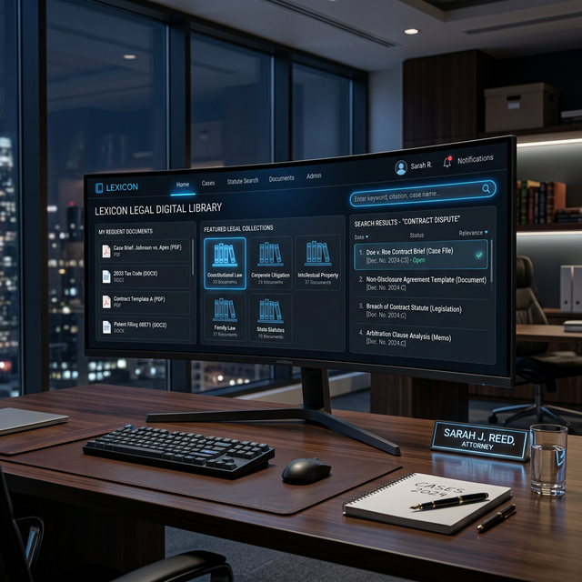

March 12, 2025
Top 5 Security Practices for Windows Server 2022
A deep dive into securing your enterprise environment against modern threats using built-in Windows features.
Read ArticleI ensure that networks, servers, and computing environments run smoothly, securely, and seamlessly. With deep expertise in system administration and technical support, I turn complex IT challenges into robust solutions.
Scroll to explore

My journey in the IT world and the values that drive my work.
Hi, I am Mr. Sajjad Iqbal, a dedicated System Administrator and Computer Operator with over a decade of experience in deploying, managing, and securing IT infrastructure. My journey began with an innate curiosity about how computer networks communicate, which quickly evolved into a full-fledged career managing mission-critical enterprise systems.
Alongside my administrative work, I have taught BS-level Computer Science courses for four years at Government Degree College Dir, where I shared my expertise with aspiring IT professionals. I also gained valuable industry experience during my two years at NADRA, serving as a Backup Officer In-Charge (OIC), where I contributed to secure data management and operational continuity.
I value reliability, security, and efficiency. Whether I'm provisioning new cloud servers, troubleshooting complex network bottlenecks, or assisting end-users, my focus is always on creating seamless, invisible technology experiences that drive organizational success. With deep expertise in system administration and technical support, I transform complex IT challenges into robust, reliable solutions for the District Judiciary.
SBBU Sheringal, 2021–2025
University of Peshawar, 2014–2018
District Judiciary Dir Upper, 2024–Current
CFMIS, Hardware, & Network Troubleshooting
NADRA, 2022–2024
Various Institutions, 2018–2022
C++, HCI, Web Tech, Compiler Construction
Improved overall network speed by 40%
Zero downtime
during major server migration
Advanced data management and documentation.
Infrastructure defense and network architecture.
Core foundational excellence in information technology.
Case studies highlighting my expertise in system administration and network architecture.
Hover for details
Revamped total corporate network infrastructure, replacing outdated switches and implementing VLANs to improve security and isolate inter-departmental traffic.
Role: Lead System Engineer
Tools: Cisco Meraki, Wireshark, pfSense
Outcome: 40% speed improvement, zero security breaches post-implementation.
Hover for details
Spearheaded the migration of 50+ legacy physical servers into a highly available VMware vSphere cluster, optimizing resource usage and power consumption.
Role: Virtualization Administrator
Tools: VMware ESXi, vCenter, Veeam Backup
Outcome: Reduced hardware footprint by 75% and improved disaster recovery capabilities.
Hover for details
Developed a centralized monitoring solution utilizing open-source tools to track performance metrics across AWS, Azure, and on-premises infrastructure.
Role: Cloud Systems Administrator
Tools: Grafana, Prometheus, Zabbix
Outcome: Achieved unified visibility, reducing incident response time by 60%.

Hover for details
Engineered and deployed a comprehensive digital e-Library system for the District Bar Council, providing lawyers with instantaneous, secure access to thousands of legal precedents, journals, and case studies.
Role: Project Lead & Implementer
Tools: Custom Server Architecture, Digital Library Software
Outcome: Modernized legal research workflows, reducing physical dependency by 80%.
Technical proficiencies and professional services I provide.
Setup, maintenance, and optimization of Windows and Linux servers, ensuring high availability.
Designing and managing routers, switches, firewalls, and VPNs for secure communications.
Comprehensive desktop support, hardware repair, and software troubleshooting for end-users.
End-to-end Full Stack Web Development. Designing responsive front-end interfaces and building secure, scalable back-end architectures.
What colleagues and managers say about my work.
"He is recognized as one of the most reliable professionals in his field, consistently demonstrating exceptional skill and commitment. With a strong sense of responsibility, he performs his duties with precision and integrity, ensuring that every task is completed to the highest standard. His dedication and expertise make him a trusted figure in both his work and service."
"As a system administrator, he doesn't just fix problems; he anticipates them. The proactive monitoring systems he instituted have practically eliminated unexpected outages in our department."
"His support as a Computer Operator is unparalleled. He always ensures everyone's workstations are running perfectly and is patient when explaining technical processes to non-technical staff."
My thoughts on industry trends, server architecture, and best practices.
A deep dive into securing your enterprise environment against modern threats using built-in Windows features.
Read ArticleStop doing manual work. Learn how to script your daily active directory management tasks for efficiency.
Read ArticleLooking for a reliable IT professional to manage your systems? Let's talk.
Feel free to reach out via email or connect with me on professional platforms.
Teh District, Barawal Bandi Dir Upper